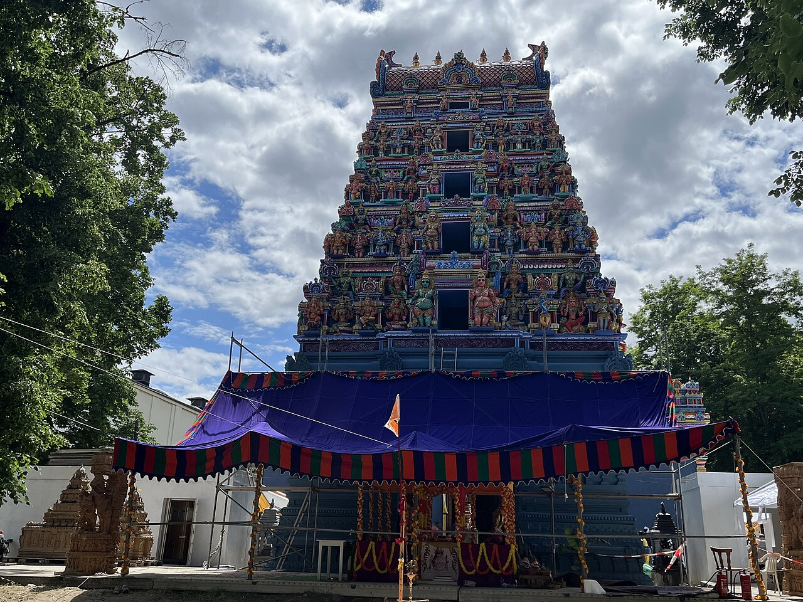

Emsdetten: Tamilischer Kultur- und Sportverein stellt sich im Integrationsbeirat vor
Der 2025 gegründete TKS e.V. hat mehr als 30 Mitglieder, plant Feste zu Deepavali und Thai Pongal und sucht ein eigenes Vereinsheim.
Vereine, Tempel und Schulen in Deutschland und der Schweiz: 6 Berichte aus dem Jahr 2026.
Seite 1 von 2
Der 2025 gegründete TKS e.V. hat mehr als 30 Mitglieder, plant Feste zu Deepavali und Thai Pongal und sucht ein eigenes Vereinsheim.
Als Ehrengast sprach der Bundespräsident neben dem Sri-Kamadchi-Ampal-Tempel über Nachbarschaft, die zur Freundschaft wird, und rief zum Schutz der Religionsfreiheit auf.

Vom 19. bis 30. Juni 2026 hatte der Tempel bei Zürich sein Jahresfest geplant, von der Fahnenhissung über die Ausfahrt des Tempelwagens bis zum Vairavar-Fest.

Mit Wasser aus Spree und Ganges wurde der Turm des neuen Tempels in Neukölln übergossen. Gebaut wurde seit 2010, bezahlt aus Spenden.
